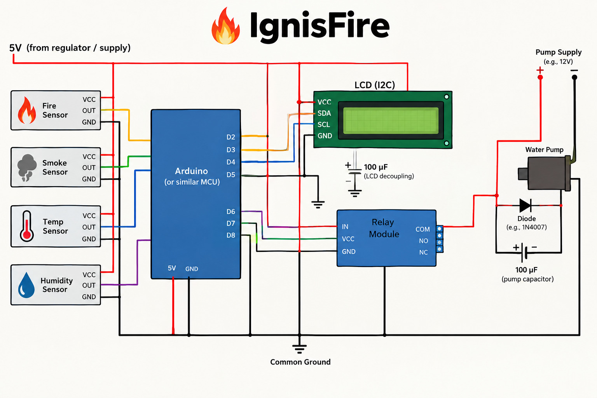
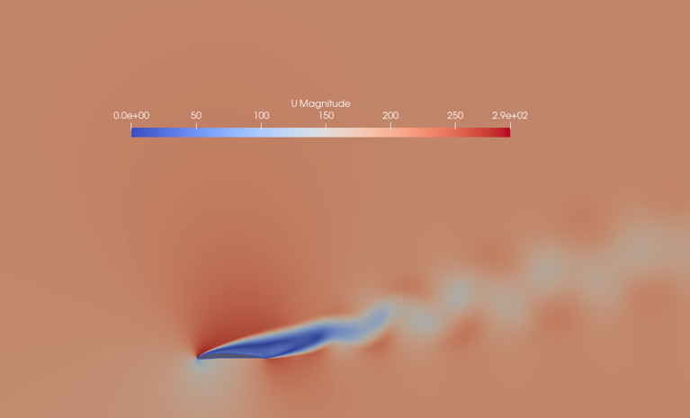
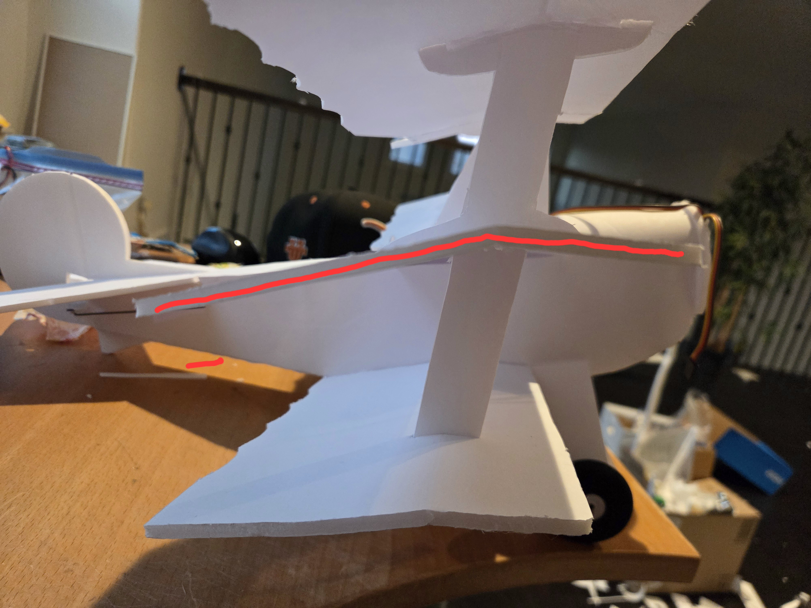
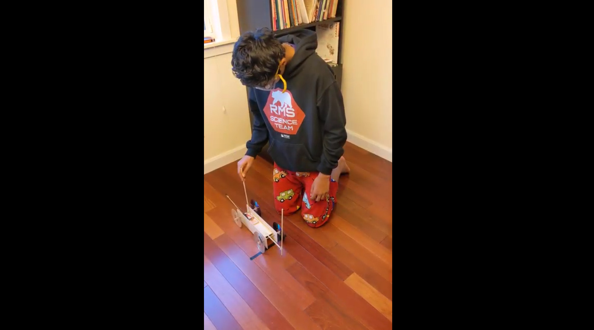

Building to Understand
I’m an aspiring aerospace engineer with a passion for understanding how things work and turning ideas into reality. My interest in aviation began with building model airplanes and experimenting with their flight, which eventually grew into projects involving aerodynamics, computational fluid dynamics (CFD), and wind tunnel testing. I enjoy going beyond what I learn in the classroom by designing, building, testing, and improving my own projects. Whether I’m studying airflow over a wing, developing new aircraft systems, or bringing a CAD model to life, I’m always looking for ways to learn something new. To me, engineering is about more than making something work—it’s about understanding why it works, learning from what doesn’t, and using that knowledge to build something better.
Projects
From aerodynamic research and aircraft construction to mechanical design and structural engineering, each project gives me a new opportunity to turn questions into something tangible.

IgnisFire
Developing an automatic fire-extinguishing system designed to improve aircraft fire safety.

Airfoil Research
Using computational fluid dynamics to investigate airflow, pressure, and airfoil performance across different conditions.

Airfoil Implementation
Applying aerodynamic research to an RC aircraft design while preserving the Corsair's distinctive inverted gull wings.

Wind Tunnel
Building a wind tunnel to observe airflow over different wing shapes and angles of attack.

Vought F4U Corsair
Constructing an RC model of the legendary fighter and exploring the engineering behind its inverted gull-wing design.

Fokker DR-1
Building a three-winged RC aircraft while tackling the challenges of wing construction, fuselage assembly, and wiring.

Wee Papillon
Building and flying my first RC aircraft while learning about its components, controls, and flight.

Mousetrap Car
Designing and refining a mousetrap-powered car by testing wheel traction, weight distribution, and motion.

Automata CAD
Using Fusion 360 to design a mechanical automaton and explore how a cam mechanism converts rotation into motion.

Truss Design
Investigating how structural loads are distributed through truss members and how tension and compression affect a design.

Bridge Building
Exploring structural strength by building bridges and comparing square supports with triangular bracing.
Question. Build. Test. Improve.
I want to understand not just whether a design works, but why it works, where it fails, and how evidence can guide the next iteration. Each project is an opportunity to connect engineering theory with practical decisions and testing.